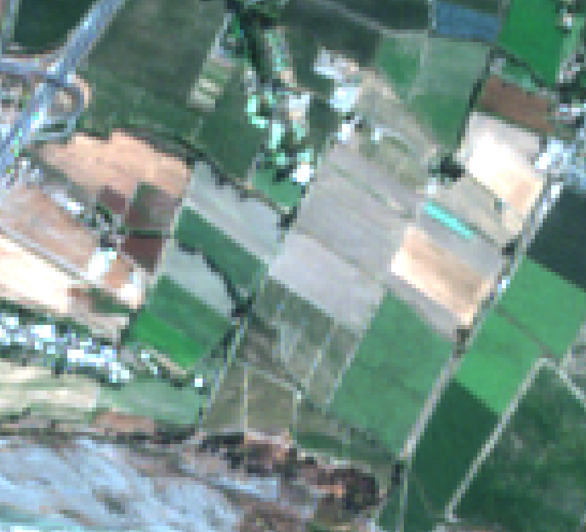
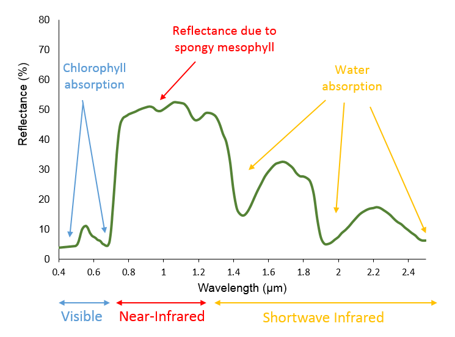
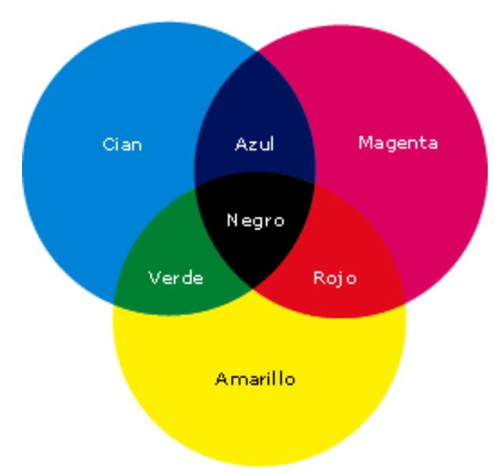
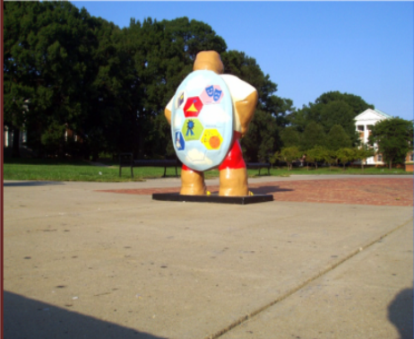
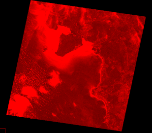
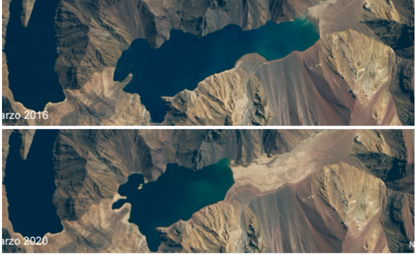
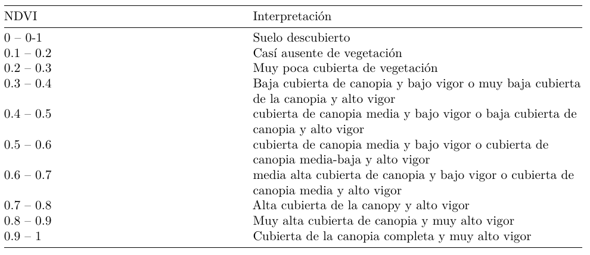
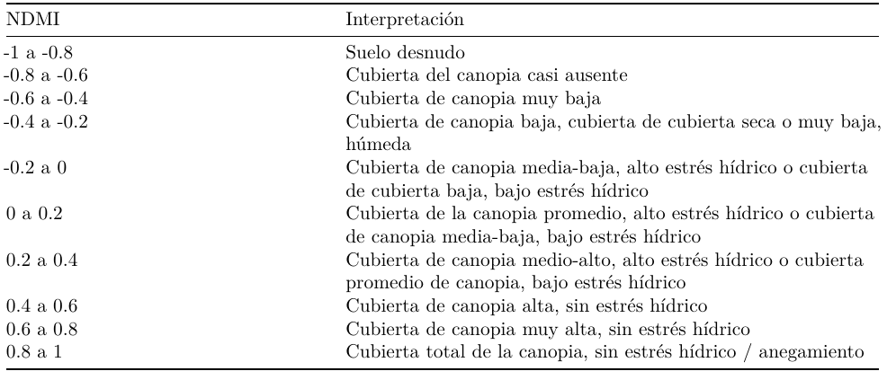
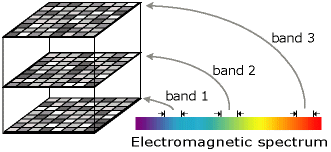

Teledetección e Imágenes Satelitales
Introducción a la Tecnología de Información Geográfica (IMSE1014)
Contenidos
- Introducción
- Teledetección
- Teoría del color
- Imágenes satelitales
- Índices de vegetación
Introducción
Datos remotos y útiles
Datos sensados de forma remota
Imágenes Aéreas
Imágenes de Satélite
Útiles por muchas razones
Cubren grandes extensiones
Rango espectral extendido
Precisión geométrica
Registro permanente
Ejemplos
Ejemplos
Volcan Llaima
Ejemplos
Liceo El Carmen, San Fernando

Ejemplos
Liceo El Carmen, San Fernando

Ejemplos
Liceo El Carmen, San Fernando

Ejemplos

Ejemplos

Teledetección
Principios básicos
La teledetección se basa en la energía electromagnética reflejada
La energía solar caracterizada por la longitud de onda
cada
colortiene una longitud de onda específica.el rango compleo de longitud de onda se denómina espectro electromagnético
nuestros ojos perciben la luz en el rango visible del espectro
Espectro electromagnético (Videos)
Espectro electromagnético

Espectro electromagnético

Principios básicos teledetección
Energía electromagnética que golpea un objeto puede ser absorvida, reflejada o transmitida
Los objetos se ven como el color que deben reflejar.
Los objetos además reflejan otras porciones del espectro.
\(r = f_r/f_i\) (reflectividad)
\(a = f_a/f_i\) (absortividad)
\(t = f_t/f_i\) (transmisividad)
Curva espectral vegetación sana

Curva espectral vegetación sana

Curva espectral vegetación sana

- Hay diferentes pigmentos en la vegetación.
- Los cloroplastos absorben parte de la radiación para activar el proceso de la fotosíntesis.
- Dependiendo del tipo de pigmento se absorbe más en unas longitudes de onda que en otras.
Ejemplo

Ejemplo

Teoría del color
Aditiva y sutractiva
Aditiva
- Colores primarios: Rojo, Azul y verde.
- Cuando se unen forman luz blanca
La teoría aditiva es la base para la interpretación de imágenes satelitales

Sustractiva
- La teoria substractiva tiene como colores primario: Amarillo, Cian y Magenta.
- Los colores complementarios se crean al quitar un color al primario.
- Las pinturas, pigmentos y tintes funcionan con esta teoria
La teoria sustractiva sienta las bases para las impresiones fotográficas.

Teoría aditiva

Teoría aditiva
Teoría aditiva

Teoría aditiva
Teoría aditiva
Composición de color
Falso Color
Se asignan bandas que no pueden verse con el ojo humano y se pueden combinar, produciendo una imagen de Falso Color
- Para visualizer una imagen en
falso colorhay que utilizar la siguiente combinación:- NIR band al display Rojo,
- Red band al display Verde,
- Green band al display Azul
Composicion de color
Una composición de 3 bandas en falso color incluye una banda de la region no visible del espectro EM
 Imagen de color verdadero
 Imagen de falso color, La banda del rojo fue reemplazada por la del infrarrojo cercano
Imagen de falso color, La banda del rojo fue reemplazada por la del infrarrojo cercano
Composicion de color
La banda azul se carga en el canal azul del visualizador.
La banda roja se carga en el canal rojo del visualizador.

La banda azul se carga en el canal azul del visualizador.
El resultado es una composición de color verdadero (RGB)

Composicion de color

Falso color
Las tonalidades más habituales en una composición en falso color son:
- Rojo, indica una vegetación sana y bien desarrollada.
- Rosa, áreas vegetales menos densa o con vegetación menos desarrollada.
- Blanco, áreas con escasa o nula vegetación.
- Azul oscuro o negro indica la presencia de agua.
- Marrón, vegetación arbustiva muy variable.
- Beige-dorado, zonas de transición, prados secos asociados a matorral ralo.
Falso color
Imágenes Satelitales
Características
Perspectiva desde muy arriba
- reduce la distorsión de terreno
Cubren grandes superficies
- costo muy alto para superficies pequeñas
Requieren procesamiento especializado de imágenes
Programar la adquisición de imágene se debe realizar con días o semanas de anticipación
-O seguir los cronogramas de vuelos fijos
Menor resolución efectiva
Tipos de imágenes satelitales
Públicas:
Landsat,
Sentinel,
MODIS
Privadas:
Ikonos,
Worldview
Principios básicos
Los sensores en los satelites operan apuntando al área a ser tomada
- Vista instantane del campo (VIC): corresonde al área que puede ser vista por cada sensor.
Los sensores construyen imágenes 2D de la superficie al registrar la energía reflejada
Landsat (USGS/NASA)
Lanzado en Julio 1972 (Landsat-1)
Primer sistema diseñado para adquirir datos de la superficie de la tierra.
Tres sensores abordo
Cámara de video
sensor multiespectral
mapeador temático (thematic mapper)
mapeador temático mejorado (enhanced thematic mapper)
Revisita cada 16 días.
Resolución espacial de 15/30/100m
Landsat (USGS/NASA)
Landsat (USGS/NASA)

Landsat (USGS/NASA - USA)
Embalse el Yeso

Sentinel (ESA - Europa)

Sentinel 2 (A/B)
Sentinel A lanzado 23 Junio 2015
Sentinel B lanzado 7 Marzo 2017
Cuentan con un sensor multiespectral (MSI)
Cada satelite captura imágenes cada 10 días, en conjunto la revisita es de 5 días.
Resolución espacial 10/20/60 m
Sentinel 2 (A/B)

Sentinel 2 (A/B)

Worldview 4
Bandas:
- Pancromática: 450 - 800nm
- Red: 655 - 690 nm,
- Green: 510 - 580 nm
- Blue: 450 - 510 nm
- Near-IR: 780-920
Resolución espacial entre 0.31 a 4m
Costo 22.5 \(USD/km^2\)
Mínima superficie: 25 \(km^2\)
Datos de archivo
Worldview 4
¿Cuál usar? ¿satelital o aérea?
Considerar los siguientes factores:
Resolución espacial
La superficie del área a analizar
Costo
Limitaciones de tiempo
Post-proceso
Requerimientos espectrales
Indices de Vegetación
Espectro electromagnético
Espectro electromagnético
Curva espectral
Vegetación
Respuesta de la vegetación
Vegetación

Índices de vegetación
Índice de Diferencia Normalizada (NDVI)

Índices de vegetación
Índice de Diferencia Normalizada (NDVI)
\[NDVI = \frac{NIR-RED}{NIR+RED} \]

Índices de vegetación
Índice de Humedad de Diferencia Normalizada (NDMI)
\[NDMI = \frac{NIR-SWIR}{NIR+SWIR} \]

Imagenes de Satelite
Imágenes Sentinel-2

Bandas Sentinel-2
Imágenes Sentinel-2
Calculadora Raster en QGIS
Utilidad
Permite realizar operaciones aritméticas con datos raster

Ejemplo

Para cálculo de Índices de Vegetación
La vamos a utilizar para calcular los índices de vegetación NDVI y NDMI.
\[NDVI = \frac{NIR-RED}{NIR+RED} \]
\[NDMI = \frac{NIR-SWIR}{NIR+SWIR} \]